レポートなどでグラフを描かなければいけないことは良くあります．データや関数のグラフを作成するには，以下のコマンドが使えます．
| グラフ作成ツール | |
|---|---|
| xgraph | シンプルなグラフ作成ツール |
| ngraph | 日本人が作ったグラフ作成ツール |
| gnuplot | 大御所 |
それぞれに特徴があるのですが，ここでは一番機能が豊富だと思われる gnuplot を使ってみます．
ターミナルのウィンドウを開いて，gnuplot コマンドを実行してください．
| gnuplot を起動する |
|---|
% gnuplot[Enter] |
gnuplot は起動すると次のメッセージを出した後，"gnuplot>" というプロンプトを出してコマンドの入力を待ちます．
| gnuplot の起動メッセージ |
|---|
G N U P L O T
Version 4.2 patchlevel 5
last modified Mar 2009
System: Linux 2.6.27-57vl5
Copyright (C) 1986 - 1993, 1998, 2004, 2007 - 2009
Thomas Williams, Colin Kelley and many others
Type `help` to access the on-line reference manual.
The gnuplot FAQ is available from http://www.gnuplot.info/faq/
Send bug reports and suggestions to <http://sourceforge.net/projects/gnuplot>
Terminal type set to 'wxt'
gnuplot>
|
ここで "gnuplot>" のすぐ上に "Terminal type set to 'wxt'" と出ていますが，これはグラフの表示や印刷を行う方法を現しています．'wxt' でもグラフは表示されますが，現時点では gnuplot を終了したときにエラーを起こすことがあるようなので，その場合は次のようにして Terminal type を 'x11' に変更してください（しなくても使えるとは思いますが…）．
| Terminal type の変更 |
|---|
gnuplot> set terminal x11
|
それでは，試しに y=x2のグラフを描いてみましょう．plot コマンドに続けて x の関数 f(x) を書きます．
| y=x2のグラフを描く |
|---|
gnuplot> plot x*x[Enter]
|
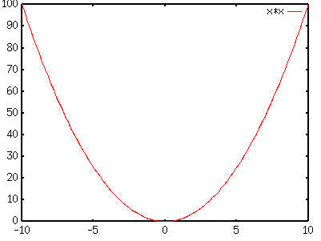
三角関数も描けます．
| sin(x) のグラフを描く |
|---|
gnuplot> plot sin(x)[Enter]
|
値の範囲は [最小値:最大値] で指定します．pi はπ (3.141592・・・) を表します．
| -π～πの範囲で sin(x) のグラフを描く |
|---|
gnuplot> plot [-pi:pi] sin(x)[Enter]
|

| 値の上限と下限を指定する |
|---|
gnuplot> plot [-pi:pi] [-2:2] sin(x)[Enter]
|
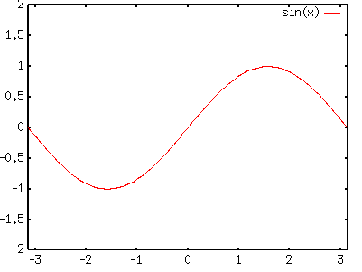
複雑な関数でも描くことができます．
| 複雑な関数のグラフを描く |
|---|
gnuplot> plot [-pi:pi] [-2:2] sin(x*x)+cos(4*x)[Enter]
|
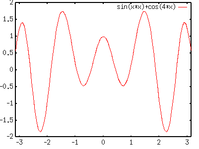
splot コマンドを使えば，３次元のグラフを描くこともできます．splot コマンドに続けて f(x,y) 形式の関数を指定します．
| ３次元のグラフを描く |
|---|
gnuplot> splot exp(-x*x-y*y)[Enter]
|
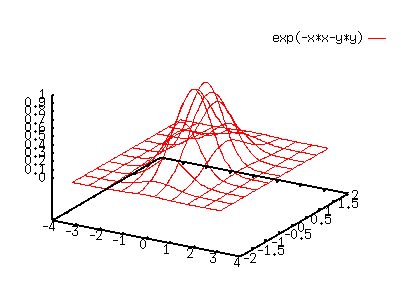
実験などで得られたデータは，そのままでは単なる数値の羅列に過ぎません．それらを目に見える形にして，はじめて解釈や分析を行うことができます．いま，次のようなデータがあったとします．
| 離散データ |
|---|
4165 2155 1776 1127 236 346 313 478 850 2657 10432 13757 9305 7289 8970 10496 9519 5334 4883 3566 3785 4205 6316 5121 |
上のデータをダウンロードするには，ここをマウスの右ボタンでクリックし，「名前を付けてリンク先を保存」を選んでください．ファイルの保存のウィンドウが出たら，data1.txt というファイル名で保存してください．
このデータのグラフを描くには，plot コマンドに "～" でくくってファイル名を指定します．
| 離散データのグラフを描く |
|---|
gnuplot> plot "data1.txt"[Enter]
|
data1.txt には一つのデータの並び（欄）しかありませんから，何行目のデータなのかが横軸になります．

グラフを線で結ぶには，with lines を指定します．
| 折れ線グラフを描く |
|---|
gnuplot> plot "data1.txt" with lines[Enter]
|
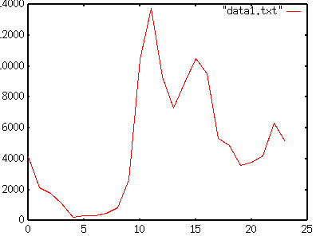
棒グラフを描くには，with boxes を指定します．
| 棒グラフを描く |
|---|
gnuplot> plot "data1.txt" with boxes[Enter]
|

ただし，このままだと横軸がずれてしまうので，横軸の範囲を指定します．
| 棒グラフを描く |
|---|
gnuplot> plot [-1:24] "data1.txt" with boxes[Enter]
|

もし，データに複数の欄があれば，一つ目のデータが横軸，二つ目のデータが縦軸になります．
| ２次元データ |
|---|
4165 29329.3 2155 14243.9 1776 9087.7 1127 6980.54 236 665.639 346 1723.1 313 873.139 478 2463.78 850 3531.96 2657 25978.9 10432 61518.2 13757 91962.7 9305 53341.5 7289 48685.0 8970 60858.3 10496 73180.3 9519 68276.7 5334 39095.3 4883 43886.0 3566 27799.9 3785 42597.1 4205 29211.1 6316 36928.9 5121 42233.2 |
上のデータをダウンロードするには，ここをマウスの右ボタンでクリックし，「名前を付けてリンク先を保存」を選んでください．ファイルの保存のウィンドウが出たら，data2.txt というファイル名で保存してください．このデータをもとに散布図を描いてみます．
| ２次元データのグラフを描く |
|---|
gnuplot> plot "data2.txt"[Enter]
|

しかし，このデータは横軸（第１欄）の値が大きさの順に並んでいないので，折れ線グラフにするとむちゃくちゃになってしまいます．
| 折れ線グラフを描く |
|---|
gnuplot> plot "data2.txt" with lines[Enter]
|

with lines はデータの順に線を引きます．このようなデータにおいてグラフを滑らかに結ぶには，後で述べる補間を用います．
２次元のグラフを描く場合，データに３つ以上の欄があっても，最初の２つの欄しか使用されません．．
| ３つの欄を持つデータ |
|---|
4165 29329.3 7.04185 2155 14243.9 6.6097 1776 9087.7 5.11695 1127 6980.54 6.19391 236 665.639 2.8205 346 1723.1 4.98006 313 873.139 2.78958 478 2463.78 5.15435 850 3531.96 4.15525 2657 25978.9 9.77753 10432 61518.2 5.89707 13757 91962.7 6.68479 9305 53341.5 5.73256 7289 48685.0 6.67924 8970 60858.3 6.78465 10496 73180.3 6.97221 9519 68276.7 7.17268 5334 39095.3 7.32945 4883 43886.0 8.98751 3566 27799.9 7.79582 3785 42597.1 11.2542 4205 29211.1 6.94675 6316 36928.9 5.84688 5121 42233.2 8.24706 |
このデータをダウンロードするには，ここをマウスの右ボタンでクリックし，「名前を付けてリンク先を保存」を選んでください．ファイルの保存のウィンドウが出たら，data3.txt というファイル名で保存してください．
| ３つの欄を持つデータのグラフを描く |
|---|
gnuplot> plot "data3.txt"[Enter]
|
この場合，１つ目の欄を横軸の値，２つ目の欄を縦軸の値としてグラフを描きます．このデータの最初の２つの欄は data2.txt と同じです．

グラフを描く欄を using で指定すれば，任意の欄のグラフを描くことができます．３つ目の欄を描く場合は using 3 とします．
| ３つ目の欄のデータのグラフを描く |
|---|
gnuplot> plot "data3.txt" using 3[Enter]
|

この場合はデータが何行目にあるのかが横軸に使われますから，with lines を付けて折れ線グラフを描くことができます．
| ３つ目の欄のデータの折れ線グラフを描く |
|---|
gnuplot> plot "data3.txt" using 3 with lines[Enter]
|

２つ目の欄を横軸，３つ目の欄を縦軸にするには，using 2:3 とします．
| ２つ目の欄と３つ目の欄を使って散布図を描く |
|---|
gnuplot> plot "data3.txt" using 2:3[Enter]
|

ただし，この場合は横軸の値に使う２行目のデータが大きさの順に並んでいなければ，折れ線グラフなどは乱れます．
| ２つ目の欄と３つ目の欄を使って折れ線グラフを描く |
|---|
gnuplot> plot "data3.txt" using 2:3 with lines[Enter]
|

この場合もグラフを滑らかに結ぶには，後で述べる補間を用います．
データに３つ以上の欄があるとき，そのデータから３次元のグラフを作成することができます．ここをマウスの右ボタンでクリックし，「名前を付けてリンク先を保存」を選んで，data4.txt というファイル名で保存してください．
| ３次元のデータのグラフを描く |
|---|
gnuplot> splot "data4.txt"[Enter]
|

３次元のデータでも with lines を指定すれば折れ線グラフを描くことができます．
| ３次元のデータの折れ線グラフを描く |
|---|
gnuplot> splot "data4.txt" with lines[Enter]
|

グラフを描く際にデータの補間を行うことができます．補間の方式には smooth unique（線形補間），smooth cspline（スプライン補間），smooth acspline（重みつきスプライン補間）および smooth bezier，smooth sbezier（ベジェ曲線）があります．
smooth unique を指定すれば，データ間を線形補間します．with lines がすべての点をテー他の順に結ぶのに対し，smooth unique は横軸の値の大きさの順に点を結びます．横軸の値が同じ点が２つ以上あれば，縦軸の値としてそれらの平均値を使います．
| 線形補間 |
|---|
gnuplot> plot "data3.txt" using 2:3 smooth unique[Enter]
|
これは前節のグラフと同じデータです．

smooth cspline を指定すれば，データ間を３次スプライン (cubic spline) 曲線で補間します．曲線はすべての点を通ります．data3.txt の三番目の欄のデータのグラフは次のようになります．
| スプライン補間 |
|---|
gnuplot> plot "data3.txt" using 3 smooth cspline[Enter]
|

smooth cspline によるスプライン補間ではすべての点を通るように曲線を描くので，誤差を含む測定データなどではかえって曲線が乱れます．そのような場合は smooth acspline を使います．各点の重み（その点の位置に引っ張られる強さ）は，各点のデータごとに３つ目のデータとして追加するか，using を使って指定します．下の例はデータのある行の番号を横軸に，３つ目の欄を縦軸に使い，すべての点の重みとして 100 を指定します．
| 重みつきスプライン補間 |
|---|
gnuplot> plot "data3.txt" using :3:(100) smooth acspline[Enter]
|

重みを小さくすると，データの点から離れていきます．同じデータで重みを１にすると，次のようなグラフになります．
| 重みつきスプライン補間の重みを小さくした場合 |
|---|
gnuplot> plot "data3.txt" using :3:(1) smooth acspline[Enter] |

ベジェ曲線は Illustrator などの作図ソフトウェアなどで使用される曲線です．データの各点はベジェ曲線の制御点として扱われます．smooth bezier はデータを順に制御点として使うのに対し，smooth sbezier はデータを横軸の値の順に並べ替えてから制御点として使います．
| ベジェ曲線 |
|---|
gnuplot> plot "data3.txt" using 3 smooth bezier[Enter]
|

しかし，bezier はデータが大きさの順に並んでいないとくしゃくしゃになります．
| ベジェ曲線 |
|---|
gnuplot> plot "data3.txt" using 2:3 smooth bezier[Enter]
|

sbezier ならデータが順に並んでいなくても滑らかに線を引くことができます．
| ベジェ曲線 |
|---|
gnuplot> plot "data3.txt" using 2:3 smooth sbezier[Enter]
|

plot コマンドにコンマで区切ってデータを複数指定すれば，それらのグラフを重ねて表示することができます．例えば上のベジェ曲線のグラフに重ねて同じデータを点で描くには，次のようにします．
| グラフの重ね合わせ |
|---|
gnuplot> plot "data2.txt" smooth sbezier, "data2.txt"[Enter]
|

もちろん，２つ目のグラフを折れ線グラフにしたり，補間することもできます．
| グラフの重ね合わせ |
|---|
gnuplot> plot "data2.txt" smooth sbezier, "data2.txt" smooth unique[Enter] |

作成したグラフを印刷したり，別のソフトウェアで利用したりするには，グラフをファイルに保存します．最初に set terminal コマンドを使って出力方法を指定します．set terminal コマンドだけを入力すれば，出力方法の一覧が表示されます．
| 出力方法の一覧 |
|---|
gnuplot> set terminal[Enter]
|
プリンタに印刷できる形式でグラフを出力するには，set terminal コマンドで postscript を指定します．
| PostScript 形式で出力 |
|---|
gnuplot> set terminal postscript[Enter]
|
次に，set output コマンドで出力するファイル名を指定します．ファイル名は "～" でくくります．ここでは graph.ps というファイルを作成するものとします．
| 出力ファイル名の指定 |
|---|
gnuplot> set output "graph.ps"[Enter]
|
ここでもう一度 plot コマンドでグラフを描きます．replot コマンドを使えば，直前に描いたものと同じグラフをもう一度描くことができます．
| 出力ファイル名の指定 |
|---|
gnuplot> replot[Enter]
|
replot を何度も実行したり，plot コマンドで別のグラフを出力したりすると，ファイルにグラフを重ね書きしてしまいます．一度グラフを出力したら，そのたびに set output コマンドで別のファイル名を指定するか，ファイル名を指定せずに set output コマンドを実行して下さい．
これでカレントディレクトリに graph.ps というファイルができているはずです．端末のウィンドウをもう一つ開いて，ls コマンドで確認してみてください．PostScript 形式のデータは， gv や evince コマンドで画面表示できます．シェルで gv コマンドを使って，graph.ps を見てみてください．
| PostScript ファイルを画面表示する |
|---|
% gv graph.ps[Enter]
|
演習室のプリンタは PostScript 形式のファイルを直接印刷することができます．なお，gv からも印刷することができます．
| PostScript ファイルを印刷する |
|---|
% lpr graph.ps[Enter]
|
LaTeX において文書中に図を埋め込む方法の一つに，EPS 形式のファイルを使用するものがあります．その形式でグラフを出力します．EPS は Encapsulated （他の PostScript ファイルに埋め込めるようにカプセル化された） PostScript です．
| EPS 形式で出力 |
|---|
gnuplot> set terminal postscript eps[Enter] gnuplot> set output "graph.eps"[Enter] gnuplot> replot[Enter] gnuplot> set output[Enter] |
EPS 形式のファイルも gv や evince コマンドで画面表示できます．
| PostScript ファイルを画面表示する |
|---|
% gv graph.eps[Enter]
|
SVG は Web における図形ファイル（ベクトル形式）の標準的な書式で，そのまま Web ブラウザ（Internet Explorer 8 以前を除く）で表示できます．出力するファイルのファイル名には，必ず .svg という拡張子を付けてください．
| SVG 形式で出力 |
|---|
gnuplot> set terminal svg[Enter] gnuplot> set output "graph.svg"[Enter] gnuplot> replot[Enter] gnuplot> set output[Enter] |
出力された graph.svg というファイルは，後で説明する Inkscape で開くことができます．ただし，Inkscape で開くと見掛けが完全に再現されないことがあるので，「表示」メニューから「アウトラインモード」に切り替えて，線の属性などを修正する必要があるかもしれません．
| Inkscape を使ってグラフを編集する |
|---|
% inkscape graph.svg[Enter]
|
このほか，Macintosh や Windows でよく使用される作図ソフトウェアの Illustrator 形式や，Web の画像データとして使用される PNG 形式などでも出力することができます．
図やイラストを描くためのツールとしては Adobe 社の Illustrator が有名ですが，これも Linux 版はありません．代わりに以下のものがあります．
| 作図ツール | |
|---|---|
| xfig | 古くからある X Window 用の作図ツール． |
| Tgif | これも古くからある X Window 用の作図ツール．「図面」みたいなものが書きやすい．日本語対応． |
| sodiposi | オープンソースで開発されているドローソフト．SVG 形式のファイルを作成できる．現在は開発が停止している模様． |
| Inkscape | オープンソースで開発されているドローソフト．sodipodi から派生したもの．Windows版もある． |
ここでは Inkscape を使って作図をしてみます．Windows 版や Mac 版もあります．Inkscape を使うと他の講義で Illustrator を使うときに混乱するかもしれませんが，Illustrator 9 形式のファイルを読み込んだり，Illustrator 8 形式でファイルを保存したりすることが可能です．ただし，Illustrator など比べて機能的に多少見劣りします．また不具合もいろいろあります．描いた図はそのまま Web ページで使用できるほか，PostScript 形式や PDF 形式でも保存できます．
ターミナルのウィンドウで inkscape コマンドを実行してください．
| Inkscape の起動 |
|---|
% inkscape &[Enter] |
メニューからも起動できます．
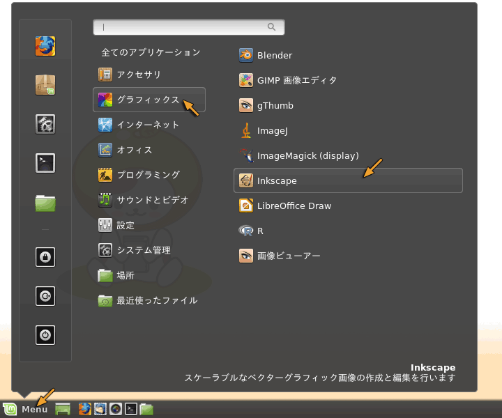
Inkscape が起動すると，空の作図のウィンドウが開きます．以降の図はウィンドウのデザインが違いますが，使用するボタン等は同じです．
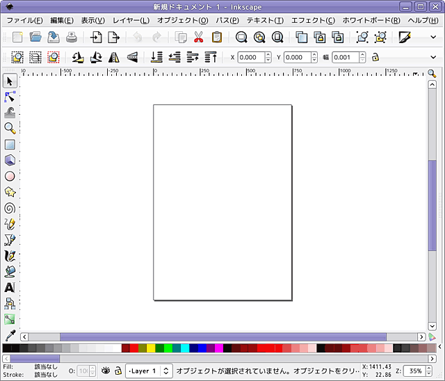
まず，描画する図形を選択します．作図エリアの左に縦に並んでいるツールの絵記号の中から，例えば矩形（四角形）を選択してください．
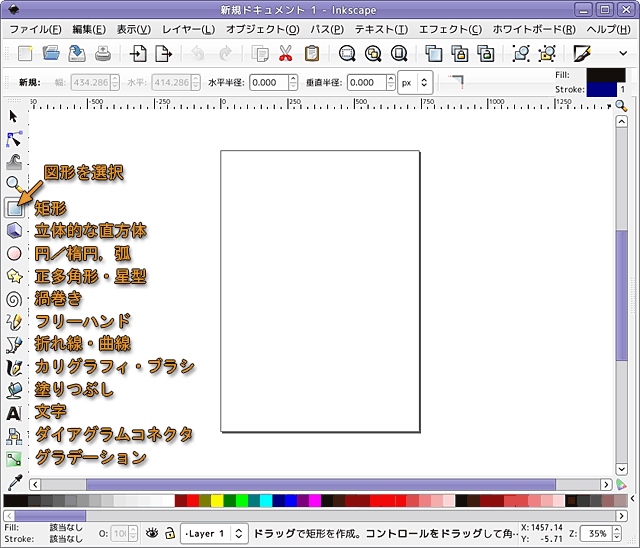
作図エリア上でマウスを斜めにドラッグすれば，図形が描かれます．正方形を描くには，[Ctrl] を押しながらドラッグします．また [Shift] を押しながらドラッグすれば，ドラッグを開始した点を中心に図形を描きます．
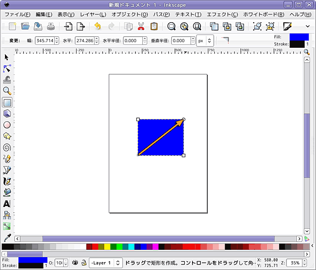
描いた図形の左上または右下にある□のハンドルをドラッグすれば，サイズを調整できます．
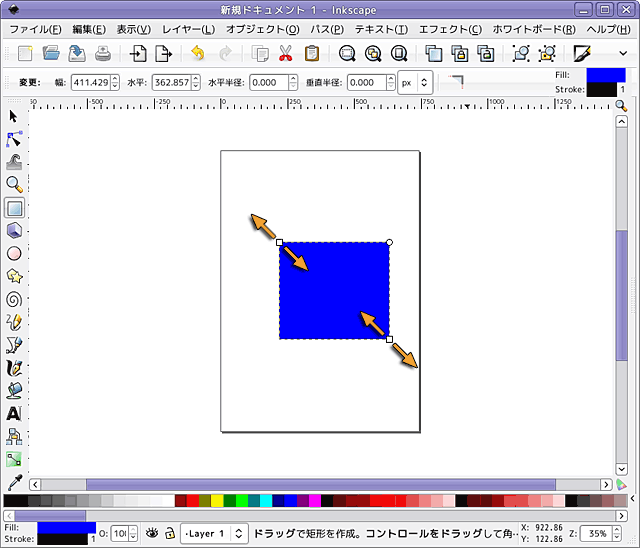
描いた図形の右上にある○のハンドルをドラッグすれば，角を丸めることができます．
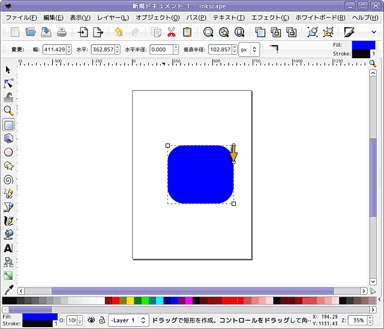
塗りつぶしの色を変えるには，作図エリアの下部にあるパレットの色をクリックしてください．パレットは，その下にあるスクロールバーで動かすことができます．なお，右上にある "Fill" "Stroke" の色のところはクリックしないでください．
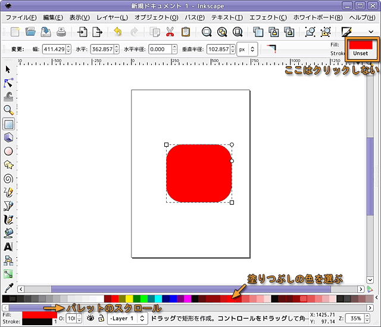
[Shift] を押しながらパレットの色をクリックすると，枠線の色を変更することができます．
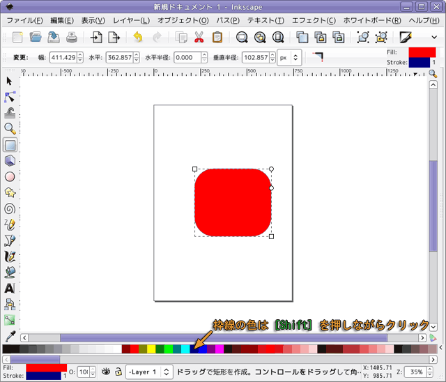
パレットの右側にある "<" をクリックすれば，パレットの色の組み合わせを変更できます．
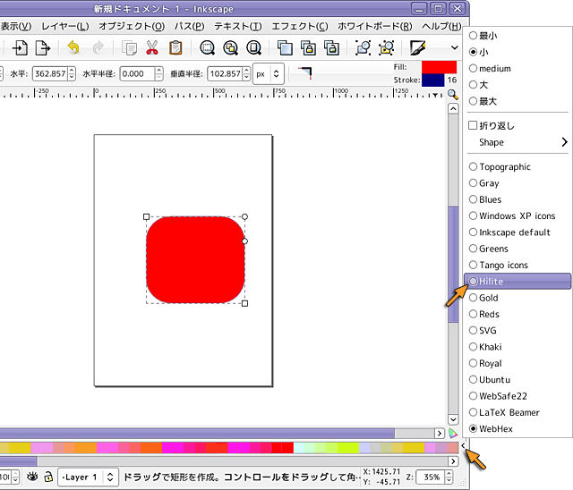
作図エリアの左下の枠線 (Stroke) の色の右側にある数字をマウスの右ボタンでクリックすると，枠線の太さを変えることができます．
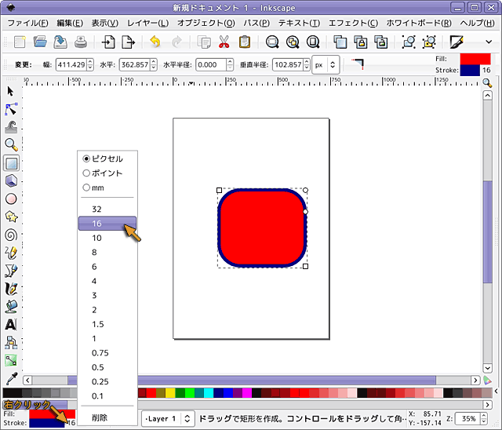
その右側の箱の中の数字を設定するか，数字の右にある "＾" "ｖ" をクリックすれば，不透明度を変えることができます．
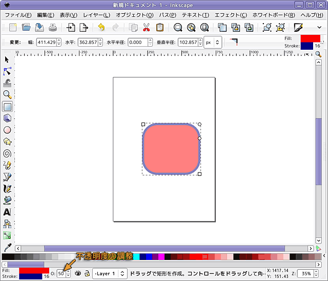
作図エリアの右上の絵筆のついている絵記号か左下の部分をクリックすると，「フィル／ストローク」のウィンドウが現れます．ここでさらに細かく設定できます．
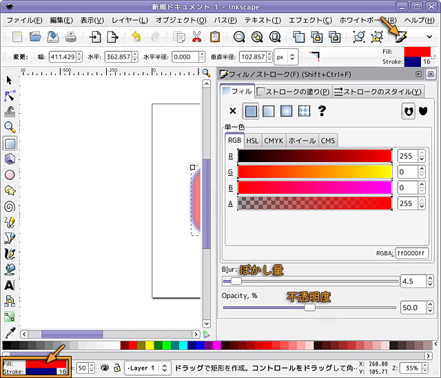
「ストロークのスタイル」のタブを選ぶと，枠線を点線にしたり，矢印にしたりすることができます（矩形のように枠線が閉じている場合は矢印は表示されません．
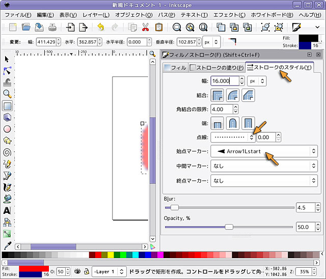
このウィンドウを閉じるには，このウィンドウの右上の×をクリックしてください．
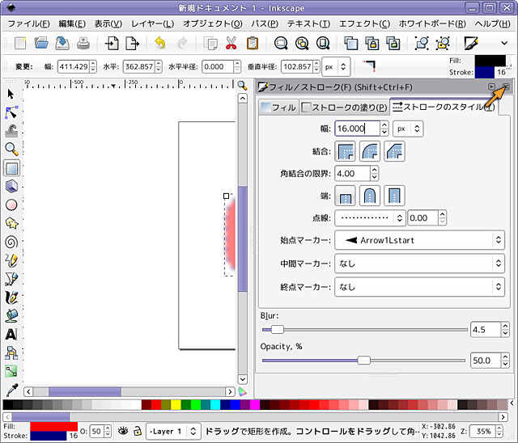
同様にして，楕円も描くことができます．この場合も，[Ctrl] を押しながらドラッグすれば真円を描くことができます．また [Shift] を押しながらドラッグすれば，ドラッグを開始した点を中心に図形を描きます．図形を描く前にパレットをクリックして色を設定しておくこともできます．
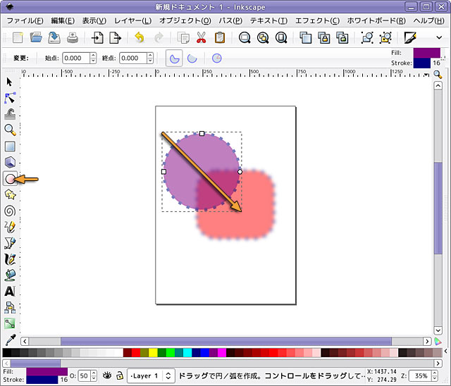
○のハンドルを操作すれば，扇形や弧を描くことができます．扇形と弧はウィンドウ上部のボタンで切り替えることができます．一番右の全円のボタンをクリックすれば，扇形や弧を全円に戻すことができます．
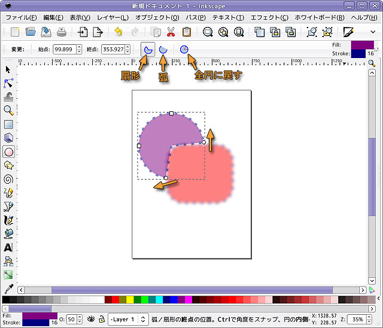
作図エリアの左下をクリックして「フィル／ストローク」のウィンドウを表示します．「フィル」のタブで「塗りなし」を選択してください．
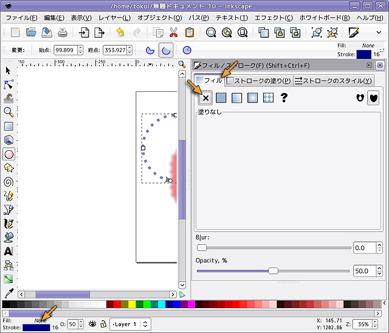
「ストロークのスタイル」のタブで，「始点マーカー」や「終点マーカー」に矢じりを設定すると，矢印を描くことができます．
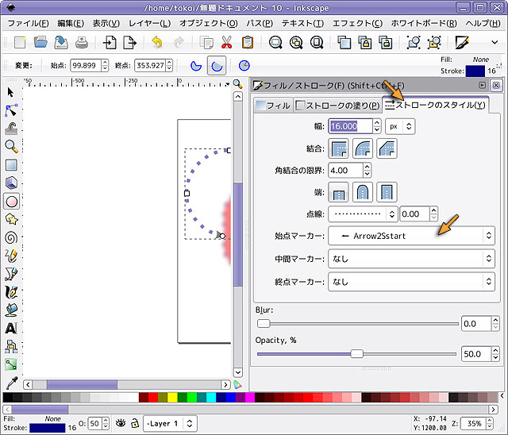
ただし，この矢印の色は線の色と異なるので，「エフェクト」メニューから「パスの変形」，「Color Markers to Match Stroke」を選んでください．
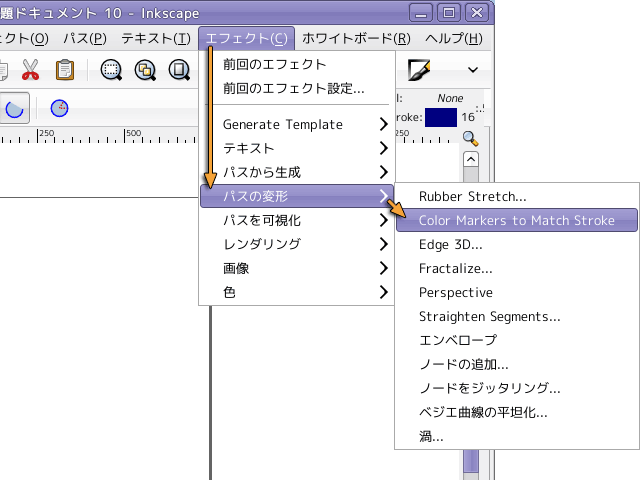
もしここで次のような警告が表示された場合は，そのまま OK をクリックしてください．
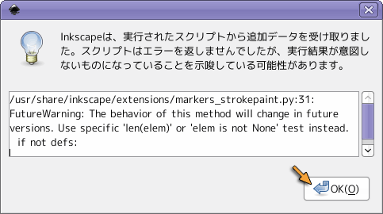
曲線（ベジェ曲線）の描き方は，Illustrator と同じです．
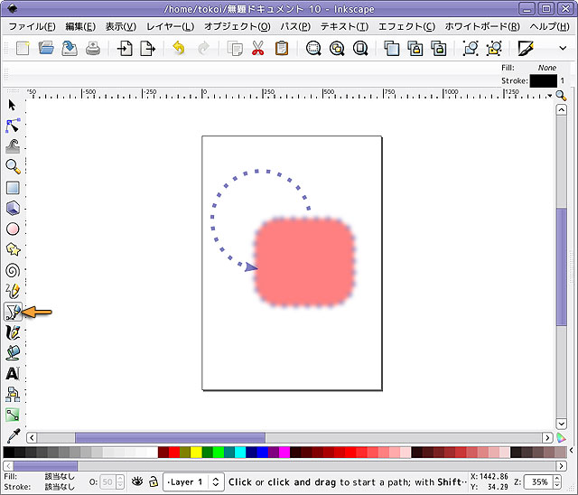
曲線を選択した後，作図エリア上でマウスをドラッグすると，線分が表示されます．曲線ではなく折れ線を描くときは，マウスをドラッグせずに，すぐにボタンを離してください．
マウスのボタンを離すと，赤い曲線が現れます．別の位置でマウスのボタンをクリックして，そのままドラッグすれば，また線分が現れます．曲線ではなく折れ線を描くときは，マウスをドラッグせずに，すぐにボタンを離してください．
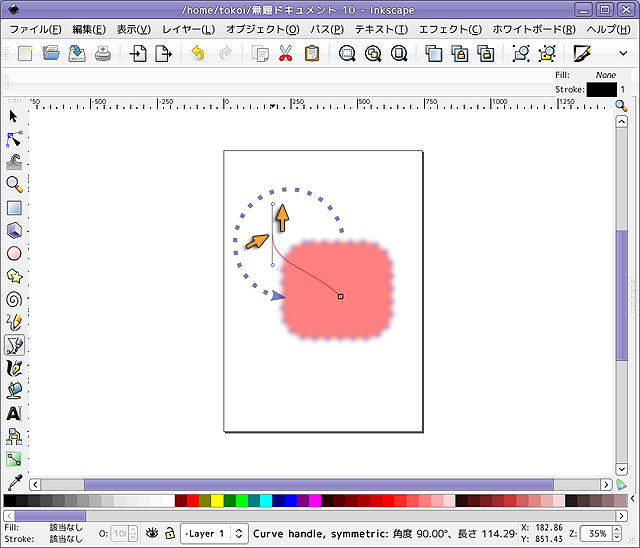
この操作を繰り返し，最後に始点の位置にある□のハンドルをクリックするか，終点の位置で右ボタンをクリックするかダブルクリックすれば，図形が作成されます．始点の□のハンドルをクリックしたときは，閉じた図形になります．このときマウスのボタンを離さずにドラッグすれば，その点での接線方向を調整できます．
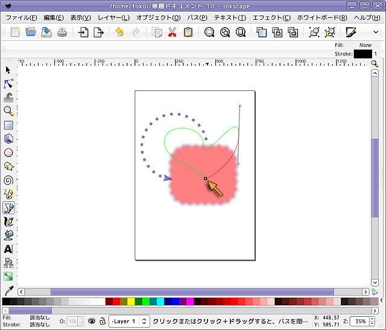
これで曲線の図形が作成されます．
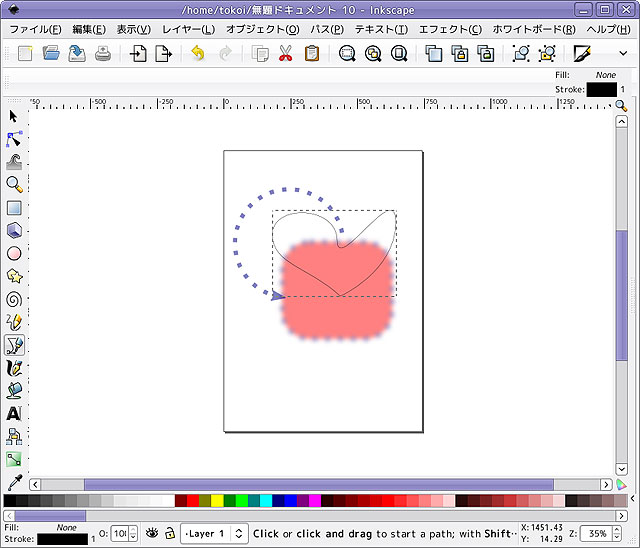
矩形や楕円の場合と同様に，塗りつぶしや枠線の色などを設定します．
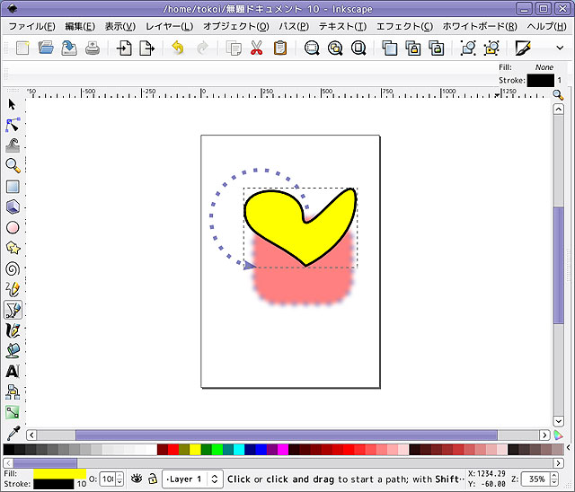
描いた図形を編集するには，まず作図エリアの左のツールの絵記号の一番上にある矢印を選ぶか [F1] またはスペースバーをタイプし，その後，編集する図形をクリックしてください．[Shift] キーを押しながらクリックすれば，複数の図形を選択できます．その後マウスをドラッグすれば，図形を移動できます．[Ctrl] キーを押しながらドラッグすれば，移動方向を水平あるいは垂直に制限できます．[Esc] キーをタイプすれば選択を解除できます．
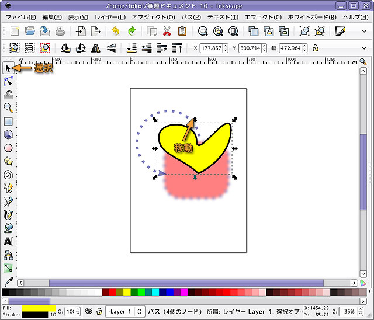
図形の周囲に表示されている矢印をドラッグすれば，矢印の方向に図形を拡大縮小できます．[Ctrl] を押しながらドラッグすれば，拡大縮小の縦横比を固定します．
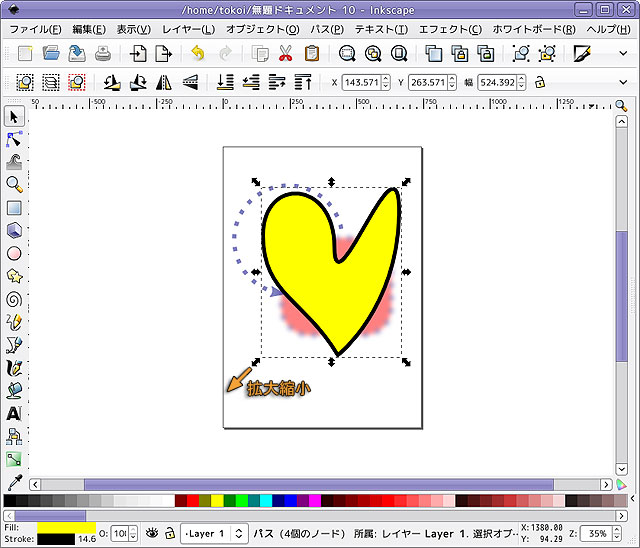
もう一度図形をクリックすれば，図形の周囲の矢印の形が変わります．このとき四隅の矢印をドラッグすれば，図形を回転できます．[Ctrl] を押しながらドラッグすれば，回転角を１５度ずつに制限できます．
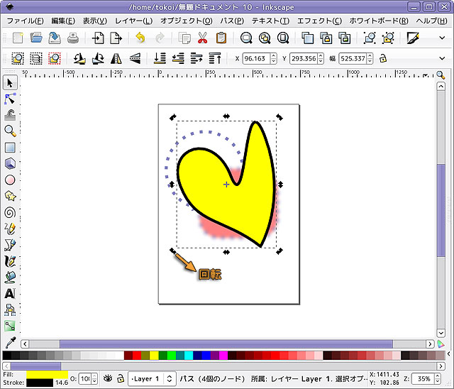
上下左右の矢印をドラッグすれば，図形をせん断変形（シアー）できます．[Ctrl] を押しながらドラッグすれば，せん断の角度を１５度ずつに制限できます．
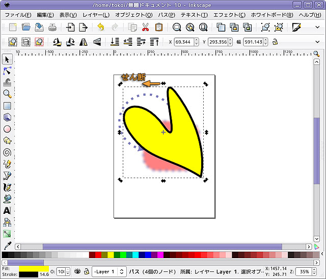
作図エリアの上部のボタンを使って，図形を左右90度ずつ回転することもできます．図形を左に90度回転すると，下のようになります．
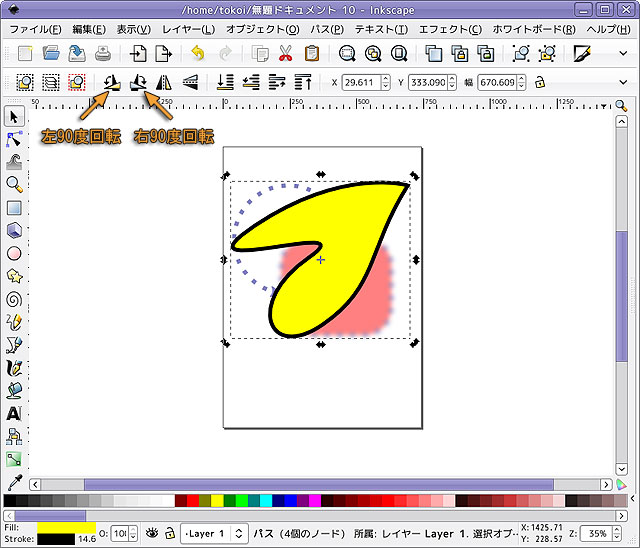
同様に作図エリアの上部のボタンを使って，図形を左右あるいは上下に反転できます．図形を左右に反転すると，下のようになります．
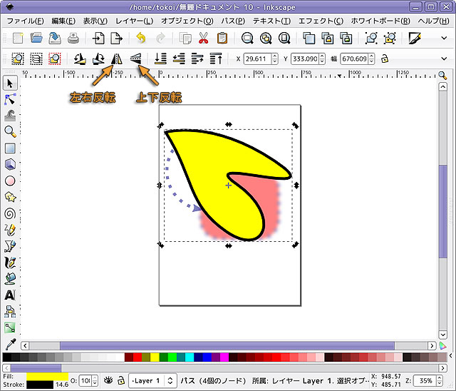
図形は描くたびに上に重ねられていきますが，作図エリアの上のボタンを使って，重なり順を変えることができます．図形を一つ下に移動すると，下のようになります．
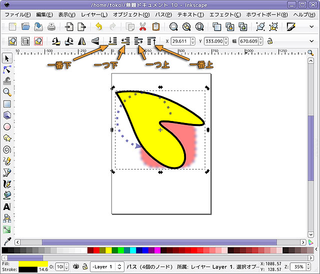
メニューの下の「はさみ」のボタンのクリックか Ctrl-X のタイプ，あるいは「編集」メニューから「切り取り」を選択することで，選択した図形を削除することができます．
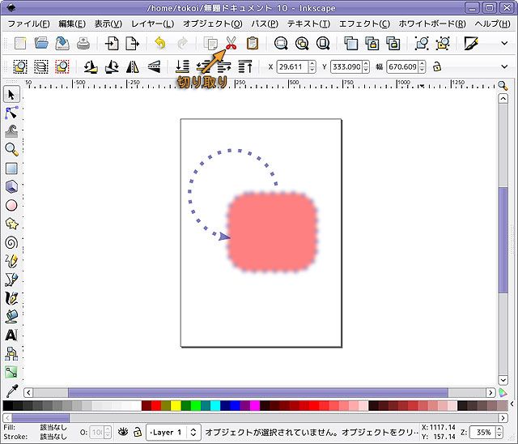
削除した図形は「はさみ」のボタンの右側にある「クリップボード」のボタンのクリック，Ctrl-V のタイプ，あるいは「編集」メニューから「貼り付け」を選択することで，再び貼り付けることができます．
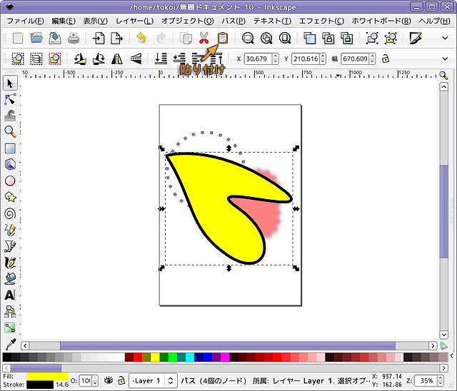
クリップボードには削除またはコピーした図形が保存されているので，同じ図形を複数回貼り付けて複製することもできます．ただし，以前に貼り付けたところと同じ位置に貼り付けられます．どちらか一方を移動させておいてください．なお，図形の複製は「複製」のボタンでもできます．
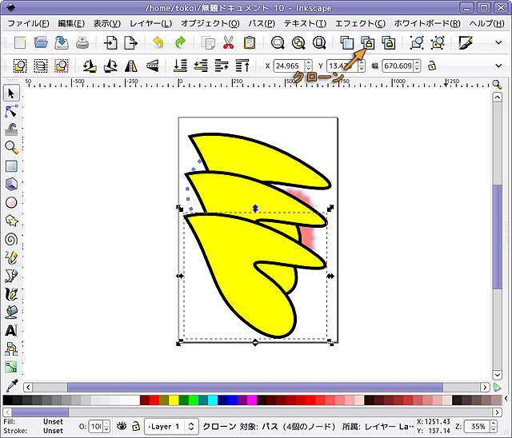
「クローン」も図形を複製します．ただし，この場合はもとの図形を変形すると，複製された図形も変形します．
クローンで複製された図形を変形しても，もとの図形に影響はありません．
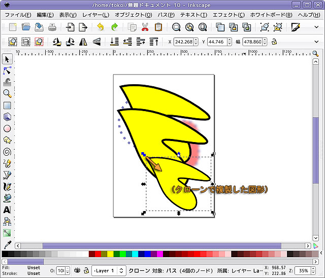
しかし，クローンによる複製の元になった図形を変形すると，複製された図形も同じように変形します．
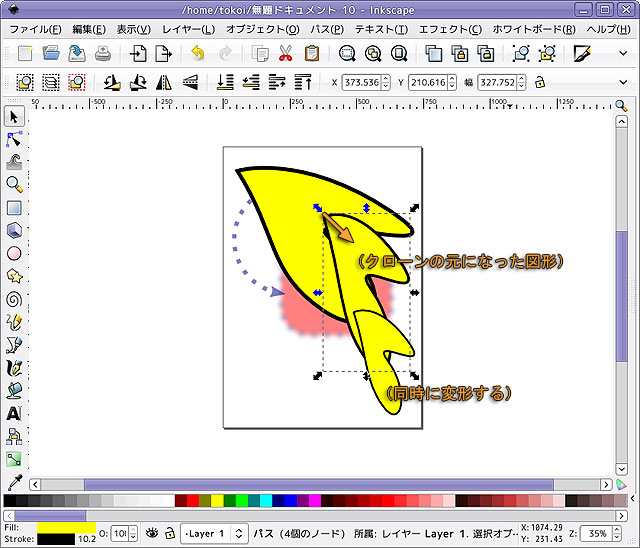
曲線で描いた図形も編集できます．曲線の変種のボタンをクリックした後，曲線の制御点を選択します．その点から出ている二つの○のハンドルを移動すれば，その点における曲線の接線の方向を変えることができます．
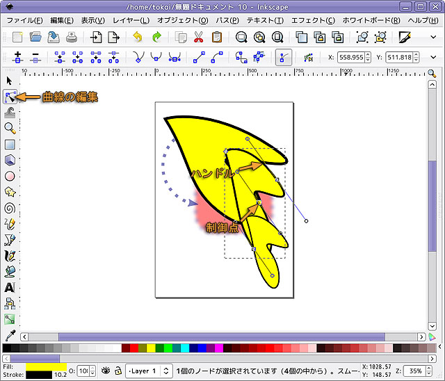
曲線は制御点を滑らかに結びますが，作図エリアの上の「制御点を角にする」ボタンを使って，制御点を角にすることができます．このボタンをクリックした後，○のハンドルをドラッグします．
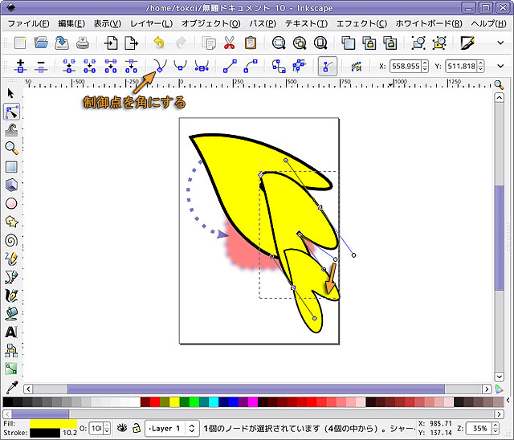
もし，ハンドルが短すぎてマウスで選択できないような場合は，「ハンドルを対称にする」ボタンをクリックしてください．
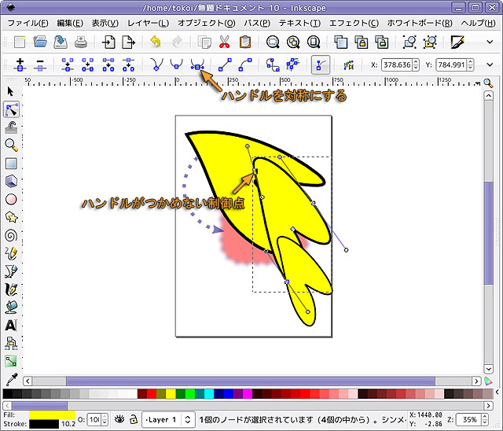
作図内容や図形に対する操作を取り消したいときは，メニューの下の左向きの黄色い矢印をクリックするか，Ctrl-Z をタイプするか，「編集」メニューから「元に戻す」を選んでください．取り消した操作をもう一度やり直したいときには，メニューの下の右向きの緑色の矢印をクリックするか，[Shift] を押しながら Ctrl-Z をタイプするか，「編集」メニューから「やり直し」を選んでください．
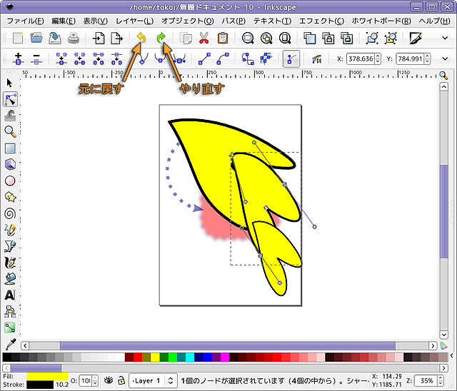
画面表示の拡大縮小は，「表示」メニューから「ズーム」の「ズームイン」「ズームアウト」を選ぶか，+ または - キーをタイプしてください．
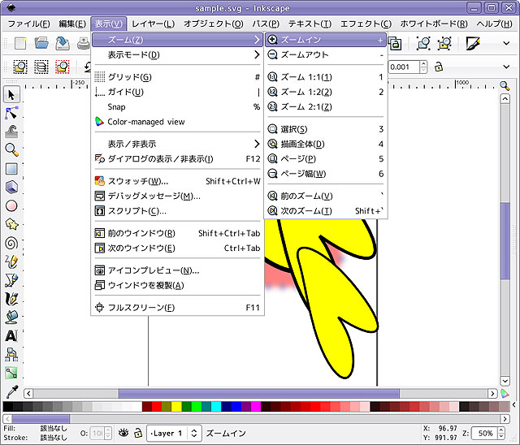
作図エリアの左にある虫眼鏡のボタンを選択すれば，マウスでクリックしたところを拡大できます．縮小するには [Shift] キーを押しながらマウスをクリックしてください．
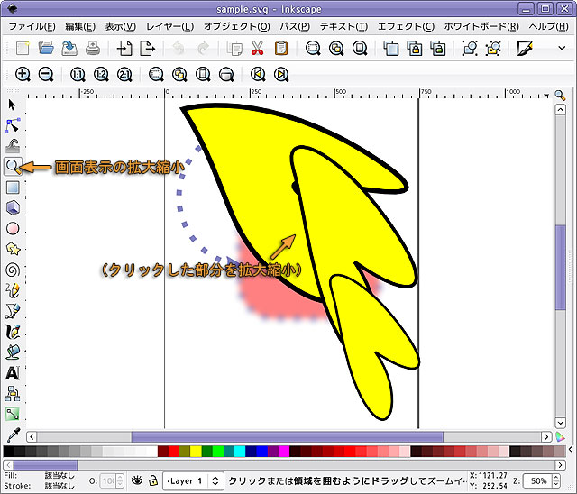
[Ctrl] を押しながらマウスの右ボタンで作図エリアをドラッグすれば，表示範囲を移動することができます．
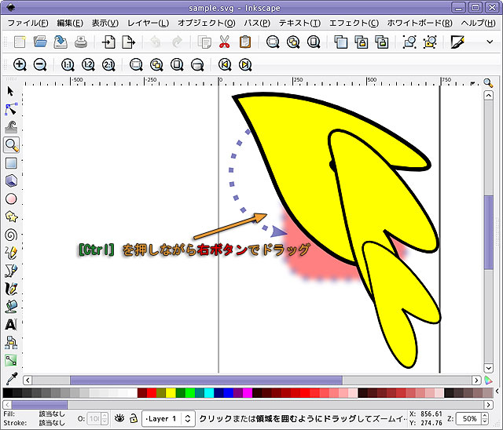
メニューの下の三つの虫眼鏡の一番左をクリックすると，選択している図形が作図エリアいっぱいに表示されます．
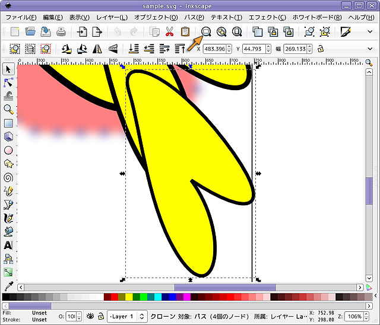
メニューの下の三つの虫眼鏡の一番右をクリックすると，ページ全体が作図エリアいっぱいに表示されます．
かっちりとした図を描きたいときは，グリッドを表示すると便利です．グリッドは # キーをタイプするか，「表示」メニューから「グリッド」を選ぶと表示されます．グリッドを消すには，もう一度 # キーをタイプするか「表示」メニューから「グリッド」を選びます．
また，グリッドを表示しているときに「スナップ」を有効にすると，マウスをクリックした位置がグリッドの交点に吸い寄せられます．% キーをタイプするか「表示」メニューの「Snap」を選んでください．スナップを無効にするには，もう一度 % キーをタイプするか「表示」メニューの「Snap」を選んでください．なお，グリッドを表示していないときにスナップを有効にすれば，他のオブジェクトの頂点や制御点などに吸い寄せられます．
作成した図を保存するには，メニューの下の左から三番目のハードディスクのボタンをクリックするか，Ctrl-S をタイプするか，もしくは「ファイル」メニューから「保存」を選んでください．
「名前」には .svg という拡張子をつけてください．その後「他のフォルダ」の左側の三角をクリックして，保存するディレクトリを選んで，「保存」をクリックしてください．
いったん保存したファイルを別のファイル名で保存するときは，[Shift] キーを押しながら Ctrl-S をタイプするか，「ファイル」メニューから「名前を付けて保存」を選んでください．
EPS 形式でファイルを出力するなら，ここでファイルの種類として「カプセル化 PostScript (*.eps)」を選び，その後に「保存」をクリックしてください．
EPS 形式（カプセル化 PostScript）で出力する場合は，テキスト（文字）をパス（図形）に変換しておかないと，他のソフトウェアで利用できない場合があります．
Inkscape を終了するには，Ctrl-Q をタイプするか，「ファイル」メニューから「終了」を選んでください．
次の (1)～(5) の作業を行ってください．その後，メールの本文に (6) の内容を書き，(5) で作成した PDF ファイルを添付して tokoi@sys.wakayama-u.ac.jp に送ってください．メールの件名 (Subject) は shori1-09 にしてください．期限は次週の水曜日中までです．
SVG ファイルの Web ページへの埋め込みSVG ファイルも GIF や JPEG 画像と同様，<img>タグを使って Web ページ内に配置することができます．<img src="pyramid.svg" width="540" height="700">ただし，古いブラウザでは表示できない場合があります．そのことを想定する場合は，SWF (Macromedia Shockwave Flash) ファイルと同様，<object>タグを使って Web ページ内に配置することができます（ブラウザ側にプラグインが必要になる場合があります）．<object type="image/svg+xml" data="pyramid.svg" width="540" height="700"></object>なお，文字は字体が Web ページを見ている側の環境にない場合が多いので，文字を選択してメニューの「パス」から「オブジェクトをパスへ Shift+Ctrl+C」を選んで，図形に変換しておく必要があります．